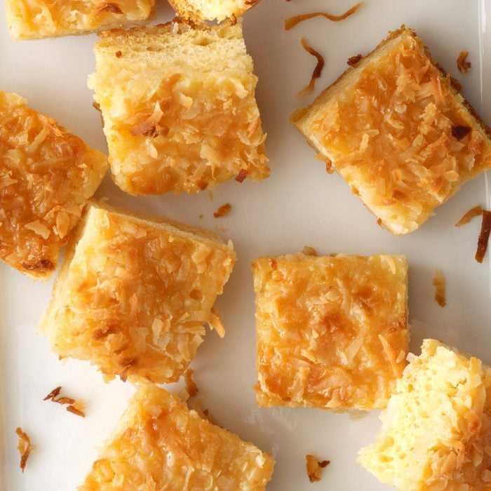

MACAROON BARS

Description
If you love coconut, these chewy macaroon bars are for you. Top with sliced almonds for a fancy presentation.
Go to Recipe
Ingredients
- 3-1/4 cups sweetened shredded coconut, divided
- 1 can (14 ounces) sweetened condensed milk
- 1 teaspoon almond extract
- 1 tube (8 ounces) refrigerated crescent rolls
Directions
- Preheat oven to 350°. Grease a 13x9-in. baking pan; line pan with nonstick foil, allowing foil to hang over edges of pan.
- Grease foil; sprinkle 1-1/2 cups coconut into pan.
- Combine milk and extract; drizzle half over the coconut.
- Unroll crescent dough into 1 long rectangle; seal seams and perforations. Place in pan.
- Drizzle with remaining milk mixture; sprinkle with remaining coconut.
- Bake until golden brown, 30-35 minutes.
- Cool completely on a wire rack before cutting. Store in the refrigerator.
- Your Dessert is ready!